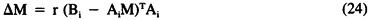

by Abraham Kandel
CRC Press, CRC Press LLC
ISBN: 084934297x Pub Date: 11/01/91
|
|
Fuzzy Expert Systems
by Abraham Kandel CRC Press, CRC Press LLC ISBN: 084934297x Pub Date: 11/01/91 |
| Previous | Table of Contents | Next |
Hopfield uses a clever argument to show that the integral term on the right-hand side of Equation 23 is zero or nearly zero and, thus, that stable points corresponds to sets on Bn. Writing Vi = gi(s ui) allows the voltage gain gi to be scaled without altering the sigmoidal asymptotes. Then ui = 1/s gi-1 (Vi). Therefore we can factor 1/s out of the integral term on the right-hand side of Equation 23. Accordingly, this term approaches zero in the high-gain case as s approaches infinity, and the sigmoid becomes a threshold-linear operation, as in the bivalent case. Then the minima of E = -VMVT are the same as if V is a binary vector, namely, (usually) the vertices of In. As s decreases, energy minima move to the interior of In, creating a more proper FAM, though more difficult to program. The less steep the sigmoid, the fewer energy minima occur at vertices of In. In sum, the trajectory of an initial input pattern is from somewhere inside In to the nearest vertex. This disambiguation process is exactly the minimization of fuzzy entropy.
Another popular associative memory that turns out to minimize fuzzy entropy is Anderson’s2-4 brain state in a box (BSB), called this because, once more, a brain state or neuron activation vector is represented as a point in In, as a fuzzy set. BSB is an example of supervised learning using the celebrated Widrow-Hoff rule of feedback error-correction. Ai and Bi are vectors of length n. The connection matrix is formed by summing the correlation matrices AiT Bi. To teach the network Bi, the difference is computed between the desired signal Bi and the (unthresholded) actual output AiM to produce the error Bi - AiM. M is then incremented additively with the error signal:

where r is a learning rate parameter. Now suppose Ai = Bi. BSB dynamics are described by A(t + 1) = A(t) + A(t) M = (I + M) A(t). M has the form of a sample covariance matrix and, thus, admits standard principal component or factor analysis in terms of dominant eigenvectors/eigenvalues, which contain most of the variance of the system. Equation 24 produces differential weighting of eigenvectors. Eigenvector enhancement drives brain states to corners of the In box. After learning, Anderson describes the qualitative nonlinear dynamics of the BSB as follows: “If we start with an activity pattern inside the box, it receives positive feedback on certain components which have the effect of forcing it outward. When its elements start to limit (i.e., when it hits the walls of the box), it moves into a corner of the box where it remains for eternity.” In other words, the BSB dynamics produce a state trajectory so that, with respect to the nearest (stored) vertex, each change in fit value is monotonically toward 0 or 1 depending whether the fit value was initially below or above ½. Therefore, the BSB model is a fuzzy entropy minimizer.
A final example of neural network minimization of fuzzy entropy occurs in some sense in Grossberg competitive learning.16-18 These networks are lateral inhibition or recurrent on-center off-surround networks. Much biological evidence suggests they naturally occur in visual information processing. Here M has positive diagonal and negative off-diagonal elements. This every-neuron-for-himself connection topology forces every neuron to positively reinforce itself and negatively reinforce its neighbors. The neurons, or feature detectors, compete for activation.46 The winner(s) of the competition classify the input pattern according to their feature characteristic. Activation thresholds regulate competition. The larger the threshold, the more sum positive activation a neuron must receive to fire and, thus, the fewer feature-detecting winners. As mentioned before, Grossberg15-18 has shown that sigmoid signal functions compute a quenching threshold for competitive networks that decides which competitors will be contrast enhanced or suppressed as noise. If the input patterns are fuzzy sets, if competitive contrast enhancement and noise suppression produce bit vectors from fit vectors, and if the quenching threshold is taken to be ½, then competitive learning also minimizes fuzzy entropy.
Two comments are in order about these examples of fuzzy entropy minimization occurring in popular associative-memory/learning models. First, fuzzy entropy minimization is a candidate design principle or architecture constraint for associative memories that disambiguate fit vectors into stored bit vectors. Grossberg competitive learning illustrates that fuzzy entropy minimization can occur in the absence of a minimized Lyapunov or energy function. We can require that proposed associative memories on In minimize fuzzy entropy, at least on average. More reasonably, we ought always examine such associators to see whether they minimize fuzzy entropy and why. Conversely, we can construct FAMs that change state if, and only if, they minimize fuzzy entropy. For instance, if Ii(t) is some suitably preprocessed input to fit element or neuron ai(t), then an interesting FAM is defined by the rule: ai(t + 1) = Ii(t) if Ii(t) ≤ ai(t) ≤ ½ or Ii(t) ≥ ai(t) ≥ ½; otherwise, ai(t + 1) = ai(t).
| Previous | Table of Contents | Next |